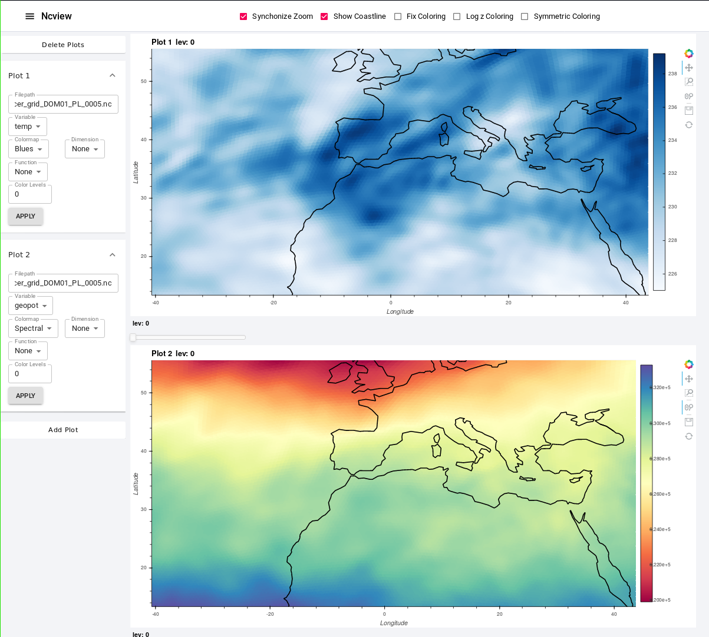

class: center, middle # Tech Workshop (ASF + IFU) on 15 Dec. 2020 .white[asdasd] --- class: center middle # Use Case (ICON) --- # Use Case (ICON) ## Conditions |What|Description| |--|--| |Data| Emission input files on unstructured grid | |Processing| Triangulation and barycentric interpolation | |Data location| LSDF at SCC | |Data Format|NetCDF| |Processing| Python and Bokeh (no preprocessing)| --- # Use Case (ICON) ## Ideal solutions - Have a (visual) overview of all emission input datasets - A web-visualization method to compare gridded and interpolated data - Available for everyone - Providing a simple way for doing own web-visualization for internally stored data --- class: center middle # gRPC --- # Native ICON visualisation - **Problem** <br> Fast visualisation of ICON simulation output - **Solution** <br> Use web technologies for interactive plots - **Timeline** .center[ |Semester|Topic| |--|--| |WS18/19| Feasability Analysis| |SS19|-| |WS19/20| Make it usable: Remote Process Calls| |SS20| Extend the feature set: REACT, Multisessions | |WS20/21|-| ] --- # Native ICON visualisation (before gRPC) |Task|1.9 GiB| 2.6 GiB|4.6 GiB| |--|--|--|--| |Loading data|3.87s|3.92s|3.93s |Main plot|0.38s|0.39s|0.40s |Agg. 1|0.54s|0.59s|0.63s |Agg. 2|18.11s|24.91s|45.5s |Agg. 3|13.86s|18.85s|48.84s .footnote[ Agg. 1: Mean value across altitudes. <br> Agg. 2: Mean value across latitude. <br> Agg. 3: Mean value across altitudes and latitudes. ] --- # Native ICON visualisation (after gRPC) |Task|1.9 GiB| 2.6 GiB|4.6 GiB| |--|--|--|--| |Loading data|.green[2.4s (3.87s)]|.green[2.41s (3.92s)]|.green[2.42s (3.93s)] |Main plot|.red[0.42s (0.38s)]|.red[0.42s (0.39s)]|.red[0.42 (0.40s)] |Agg. 1|.red[0.67s (0.54s)]|.red[0.75s (0.59s)]|.red[0.91s (0.63s)] |Agg. 2|.green[0.09s (18.11s)]|.green[0.09s (24.91s)]|.green[0.11s (45.5s)] |Agg. 3|.green[0.24s (13.86s)]|.green[0.3s (18.85s)]|.green[0.38s (48.84s)] .footnote[ Agg. 1: Mean value across altitudes. <br> Agg. 2: Mean value across latitude. <br> Agg. 3: Mean value across altitudes and latitudes. ] --- # Advantages of gRPC - Native splitting of data processing and data delivery - Client / Server architecture - Requests and Services - Native support of every commonly used programming language (Go, Rust, C++, C, Python) - Standardized interfaces enable cross communication (Go > Python, Python > Rust) - Streaming and block processing support - Server Streaming - Client Streaming - Bidirectional Streaming - Encrypted communication --- # Native ICON visualisation (current view) .center[.middle[  ] ] --- # Native ICON visualisation (tech view) .white[sdf] .center[.middle[ <img src="./visulisation_tech_view_webgl2.png" height="265"> ] ] --- class: center, middle background-image: url(Thats_all_folks.svg) background-size: cover